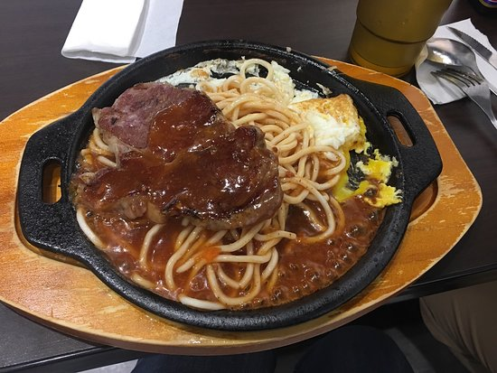

樂昀牛排館
google評價：4.6★
店家資訊
地址：新北市新店區大豐路21號
營業時間：早上11:30至晚上11:00
店家電話：02-2911-2292

推薦菜單
特製牛排(紐/澳)150元 特製豬排150元
脆皮雞腿排160元 香煎鱈魚排170元 沙朗牛排180元
翼板牛排 200元 菲力牛排250元
超值雙拼(特牛+特豬)250元 樂昀雙拼(脆雞+沙朗)280元
顧客評論
有些牛排店只有普通的濃湯，但這家店有附酥皮濃湯，濃湯，店內飲料也都是免費的。他的沙朗牛很軟嫩，筋很少，搭配蘑菇醬、鐵板麵還有荷包蛋更加，蠻適合小孩跟長輩食用，牛排的份量也很符合價格，不貴用料也不會隨便。再來推薦的還有脆皮雞腿排，很好入口，外表煎得很焦脆，雞肉也不會柴。